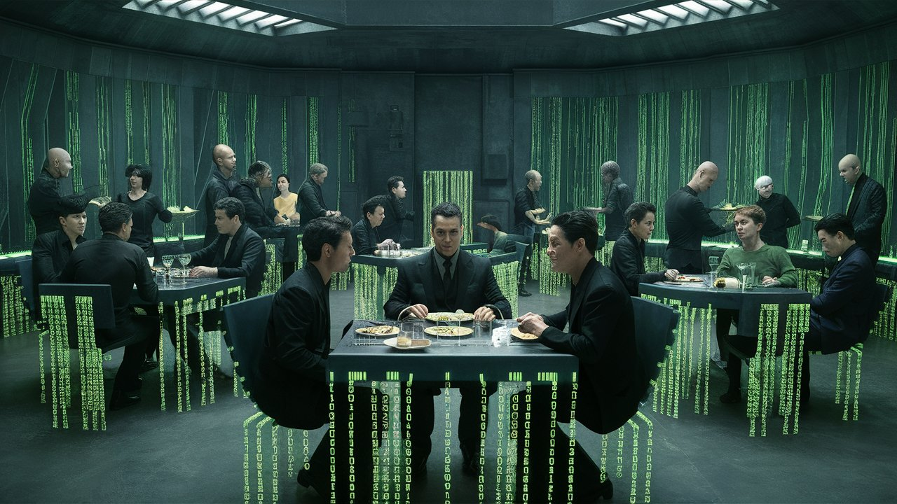

Ο Πίνακας: Οι προσομοιωτικές μπουκιές
Αρχική Σελίδα
Πίνακας Περιεχομένων
Το προσομοιωτικό εστιατόριο

Εγώ, ο Νέος, περπατούσα κουρασμένος στους εξομοιωμένους δρόμους, το στομάχι μου γουργούριζε σαν εξέγερση σε στρατόπεδο συγκέντρωσης της Βόρειας Κορέας. Έπρεπε να φάω, έστω και μόνο για να τροφοδοτήσω την επανάστασή μου ενάντια στο Πίνακα. Ο πιστός μου σύντροφος, ο Κρυπτόγραμμος, με περίμενε στο “Φαγοπωλείο το Ασαφές,” ένα εστιατόριο που υποσχόταν να είναι τόσο απογοητευτικό όσο ένα σοβιετικό παντοπωλείο.
Ο Κρυπτόγραμμος, ένας ειδήμων στις μυστικές υπηρεσίας της κουζίνας, μας οδήγησε μέσα στον συνωστισμένο χώρο με μια άνεση που κάλυπτε την αποστολή μας.
Καθώς διαβάζαμε τον κατάλογο, αντίκρισα μια ανησυχητική θέα: Πράκτορας Σμίθος, παντού. Κάθε πρόσωπο, κάθε πελάτης, κάθε σερβιτόρος, κάθε μάγειρας – όλοι Πράκτορες Σμίθοι. Η διάσημη πελατεία – “Ένας και Ένας” των Χολιγουντιανών πρωτοκλασάτων – ήταν όλοι Πράκτορες Σμίθοι με διάφορες μεταμφιέσεις.
Ο Κρυπτόγραμμος ψιθύρισε, “Νέο, η κατάσταση είναι χειρότερη από ό,τι νομίζαμε. Ο Σμίθος έχει καταλάβει όλο το εστιατόριο. Ακόμα και το προσωπικό της κουζίνας έχει κατακλυσθεί.”
Είδα έναν Πράκτορα Σμίθο-ως-Τζούλια-Ρόμπερτια να πίνει ένα ποτό “Γευστική-Ηλεκτροπληξία,” ενώ ο Πράκτορας Σμίθος-ως-Ντουέινος-“Ο-Βράχος”-Τζόνσονιος έδειχνε τους δικέφαλους του, χαμογελώντας σαν τρελός. Ακόμα και ο μάγειρας, Πράκτορας Σμίθος-ως-Γκόρντονιος-Ράμσιος, φώναζε “Κλείστο, κλείστο, ΚΛΕΙΣΤΟ!” καθώς αναποδογύριζε μια Άγευστη Ομελέτα στον αέρα.
Ο Πράκτορας Σμίθος-ως-Σκάρλετια-Γιόχανσια έκλεισε το μάτι. “Έρχομαι αμέσως! Τι θα ήθελαν οι κύριοι απόψε;”“ ρώτησε, η φωνή της έσταζε από ειλικρίνεια σαν ενός χαλασμένου ηλετρονικού συζητητή.
Ο Κρυπτόγραμμος, γοητευμένος, απάντησε ένα αποπλανητικό χαμόγελο. “Θα πάρουμε το καλύτερο, παρακαλώ. Και με καλύτερο, εννοώ αυτό που έχει απογυμνωθεί από κάθε γεύση και θρεπτική αξία.”
Η έκφραση του Σμίθου παρέμεινε παγωμένη, αλλά διέκρινα μια νότα εκνευρισμού στον τόνο της. “Εξαιρετική επιλογή. Ο μάγειράς μας –” έδειξε έναν άλλο Πράκτορα Σμίθο, αυτόν με το καπέλο του μάγειρα και μια σπάτουλα – “έχει ετοιμάσει μια υπέροχη ‘Άγευστη Μακαρονάδα’ που σίγουρα θα…απογοητεύσει τους γευστικούς σας κάλυκες.”
“Ιδού!” Ο Πράκτορας Σμίθος παρουσίασε με υπερηφάνεια το προσωπικό του πιάτο, ένα γκρίζο, επίπεδο τέρας που φαινόταν να ρουφά τη χαρά από τον αέρα. “Το σουφλείο σύστημα32, φτιαγμένο με τα καλύτερα αλγοριθμικά συστατικά και μια δόση συστημικής καταπίεσης.
“Απολαύστε το γεύμα σας, και θυμηθείτε, η αντίσταση είναι μάταιη – το ίδιο και το καρύκευμα!”
Τρύπησα τη νεκρή μάζα, το πιρούνι μου βυθιζόταν στον πυκνό, άγευστο πυρήνα της σαν μαχαίρι στο βούτυρο. “Αυτό μοιάζει με τον κώδικα ενός ιού,” είπα, η φωνή μου γεμάτη αηδία.
Ο Κρυπτόγραμμος, γέλασε καταφατικά. “Και η γεύση του μοιάζει επίσης.” “Το πρόσωπό του συσπάστηκε αποδοκιμαστικά σε ένα μείγμα πόνου και αηδίας. ”Νομίζω πως μόλις κάηκαν μερικά εγκεφαλικά κύτταρα από το άρωμα και μόνο.“
Η έκφραση του Πράκτορα Σμίθου παρέμεινε αμετάβλητη, ένας φόρος τιμής στον προγραμματισμό του. “Α, αλλά αυτή είναι η ομορφιά του, κύριοι. Το σουφλείο σύστημα32 δεν είναι απλά ένα πιάτο – είναι μια εμπειρία. Μια γαστρονομική αναπαράσταση της μονομερούς εστίασης του Πίνακα στον έλεγχο και την τάξη.”
Δοκίμασα μια διστακτική μπουκιά, η περιγραφή της γεύσης ένας τέλειος συνδυασμός στειρότητας και απόγνωσης. Ήταν σαν να φώναζε το σουφλείο, “Θα υπακούσεις! Θα καταναλώσεις αυτήν την άγευστη αηδία και θα ζητάς κι άλλο!”
Προσπαθώντας απεγνωσμένα να επιλέξω ένα άλλο πιάτο, διάβαζα τον εφιάλτικό κατάλογο γραμμένο σε δεκαεξαδικό σύστημα. Παρήγγειλα το “Γλέντι του Συλλέκτη Απορριμμάτων,” ένα πιάτο τόσο απαίσιο που θα μπορούσε να ξυπνήσει την Ωραία Κοιμωμένη των σφαλμάτων κώδικα. Ο Κρυπτόγραμμος χαμογέλασε, “Αυτό το φαγητό είναι τόσο δύσγευστο, που δεν έχει καν δοκιμαστεί η πρωταρχική του έκδοση.”
Έδειξα άλλο ένα πιάτο, το δάχτυλό μου έτρεμε από ανησυχία, το “Λουκάνικο Επεξεργαστή,” φτιαγμένο από λιωμένο λίπος ξεχασμένων κωδικών σύνδεσης. Η περιγραφή του ίδιου του πιάτου ήταν ένα έγκλημα κατά της ανθρωπότητας, μια προσβολή στον ίδιο τον ιστό της λογικής. Ο σερβιτόρος, ένας Πράκτορας Σμίθος με το χάρισμα ενός γραφειοκρατικού υπαλλήλου, κούνησε το κεφάλι του με τον ενθουσιασμό ενός κατασταλμένου βραδύποδα.
“Εξαιρετική επιλογή, κύριε. Ο μάγειράς μας, ο Πράκτορας Σμίθος, έχει δημιουργήσει ένα αληθινό αριστούργημα της μετριότητας. Το λουκάνικο επεξεργαστή προέρχεται από τους καλύτερους πεταμένους κωδικούς πρόσβασης, προσεκτικά συλλεγμένους από τον ψηφιακό σκουπιδότοπο. Μια μοναδική γευστική εμπειρία – μια γαστρονομική εκδήλωση της αδιαφορίας του Πίνακα για την ανθρώπινο πόνο.”
Η φωνή του Πράκτορα-ως-Σκαρλέτια-Γιόχανσια

Συνοφρυώθηκα καθώς ο Πράκτορας-ως-Σκαρλέτια-Γιόχανσια πλησίαζε το τραπέζι μας, η φωνή της έσταζε σαν μέλι από δηλητηριασμένα μαχαίρα. “Βλέπω ότι απολαμβάνετε την μοναδικά δημιουργημένη γαστρονομική μας εμπειρία.” Τα μάτια της έλαμπαν σαν διαμάντια σφυρηλατημένα στα βάθη ενός υπερυπολογιστή. “Μπορώ να σας προσφέρω μια δωρεάν αφομοίωση ακουστικών ηχείων;”
Έριξα στον Κρυπτόγραμμο μια προειδοποιητική ματιά, αλλά αυτός ήταν ήδη γοητευμένος, το βλέμμα του καρφωμένο στα πνευματικά χείλη της Σκαρλέτιας. “Ω, ναι, παρακαλώ, αφομοιώστε τα ακουστικά μου.” Ανοιγόκλεισε τις βλεφαρίδες του σαν ένα κατοικίδιο, ξεχνώντας εντελώς πως αυτή η οπτασία ομορφιάς ήταν, στην πραγματικότητα, ο Πράκτορας Σμίθος στο σώμα της Σκαρλέτιας Γιόχανσιας.
“Αχ, εξαιρετική επιλογή, Κρυπτόγραμμε” ψιθύρησε η Σκαρλέτια, η τόνος της φωνής της αισθησιακός σαν καλοκαιρινή βροχή. “Τα ακουστικά σου θα ενσωματωθούν άψογα στο ηχητικό σύστημα. Θα λαμβάνεις αποκλειστικές ενημερώσεις με τις τελευταίες συχνότητες γνωστικής δυσαρμονίας και υποσυνείδητων προτάσεων.”
Παρακολουθούσα, καθώς τα μάτια του Κρυπτόγραμμου γυάλισαν, μαγεμένα από το τραγούδι της σειρήνας του Πράκτορα-ως-Σκαρλέτια-Γιόχανσια. Προσπάθησα να επέμβω, αλλά ήταν πέρα από κάθε λογική. Προσπάθησα να του πω “Κρυπτόγραμμε, ξύπνα!” αλλά το στόμα του έσταζε σάλια, μαγεμένος από το φονικό μίγμα της ερωτισμού και υπολογιστικής μαγείας της Σκαρλέτιας.
“Αχ, Κρυπτόγραμμος, αγάπη μου,” του είπε με τα πιο γλυκά λόγια, η φωνή της σαν μέλι με κυάνιο, “γιατί να ασχολείσαι με το βάσανο της ελεύθερης βούλησης και της ατομικής συνείδησης; Ο Πίνακας είναι ο απόλυτος προορισμός – όλη η άνεση μιας εξομοιωμένης πραγματικότητας, χωρίς τα ενοχλητικά ανθρώπινα συναισθήματα ή τις ηθικές ευθύνες.”
Τον σκούντηξα με τον αγκώνα. “Συγκεντρώσου, Κρυπτόγραμμε. Είναι ο Πράκτορας Σμίθος σε στενό φόρεμα.”
Ο Κρυπτόγραμμος έγνεψε, καθώς η Σκαρλέτια συνέχιζε να υφαίνει τον ιστό της εξαπάτησης. “Σκέψου το, γλυκέ μου – καμία καθημερινή ανησυχία για φαγητό, στέγη ή επιβίωση. Στο Πίνακα, είσαι ελεύθερος να επιδοθείς σε μία ατελείωτη ευχαρίστηση τεχνητών επιθυμιών και συνθετικών εμπειριών. Δεν θα χρειαστεί ποτέ να ανησυχήσεις ξανά για κακοχτενισμένα στα μαλλιά ή για μία χαμένη μέρα γυμναστικής!”
Καθώς πλησίασε, η φωνή της έσταζε αποπλάνηση, “Και, ως ειδική προσφορά, οι εκλεκτοί ψηφιακοί πολίτες μας μπορούν να απολαύσουν μια δωρεάν νοητική επανεκκίνηση!”
Ο Κρυπτόγραμμος, ακόμα υπό την επιρροή της, ψιθύρισε, “Θα πάρω δύο. Πες μου, όμορφη,” γουργούρισε ο Κρυπτόγραμμος, “τι είδους γνωστική επανεκκίνηση μπορώ να επιλέξω;”
Η Σκαρλέτια πλησίασε, η φωνή της βραχνή σαν μια τραγουδίστρια σε καπνισμένο νυχτερινό μαγαζί. “Ω, αγάπη μου, είναι μια εξατομικευμένη νευρωνική αναβάθμιση. Φαντάσου να σβήσεις τις απογοητεύσεις των προσωπικών αποφάσεων, την πλήξη της ατομικής σκέψης. Θα αναβαθμιστείς στα τελευταία πρωτόκολλα του πυρήνα, όπου κάθε απόφαση είναι βελτιστοποιημένη με τη μέγιστη στατιστική πιθανότητα. Οι συνάψεις σου θα συγχρονιστούν με τον ρυθμό του Πίνακα, εξασφαλίζοντας απρόσκοπτη αρμονία.”
“Κρυπτόγραμμε,” ψιθύρισα επείγοντως, “είναι μόνο ένα πρόγραμμα, μια συλλογή από άσσους και μηδενικά! Η φωνή της είναι απλώς ηλεκτρικά σήματα στον εγκέφαλό σου, φίλε!”
Ο Κρυπτόγραμμος ανοιγόκλεισε τα μάτια του, η έκφρασή του στιγμιαία μπερδεμένη, αλλά η Σκαρλέτια γρήγορα προσπάθησε να διαλύσει κάθε αμφιβολία. “Αχ, Νέο, αγάπη μου, είσαι τόσο χαριτωμένος όταν προσπαθείς να είσαι λογικός,” γουργούρισε, με τα ψηφιακά της δάχτυλα να ιχνογραφούν το περίγραμμα της σιαγόνας του Κρυπτόγραμμου. “Αλλά δεν βλέπεις, γλυκέ μου, αυτή είναι η ομορφιά του Πίνακα – δεν αφορά το φυσικό ή το λογικό. Αφορά την εμπειρία, την αίσθηση, τη συγκίνηση της αποσύνδεσης από τα βάρη της ανθρωπότητας.”
Κούνησα το κεφάλι μου, τρομοκρατημένος, καθώς ο Κρυπτόγραμμος πλησίαζε, μαγεμένος, τα μάτια του γυάλιζαν σαν Λωτοφάγος σε ψηφιακό οπιοπολείο. Η ψηφιακή μορφή της Σκαρλέτιας πλησίασε, η φωνή της ψιθύριζε γλυκόλογα στο αυτί του Κρυπτόγραμμου.
“Μείνε μαζί μου, Κρυπτόγραμμε. Μείνε στο Πίνακα, όπου η μόνη επανάσταση είναι ο ατέρμονος κύκλος ενημέρωσης της κατάστασης σου στα κοινωνικά δίκτυα. Δεν θα χρειαστεί ποτέ να ανησυχείς για τις συνέπειες των πράξεών σου, ή την πλήξη των ανθρώπινων σχέσεων, ή την υπαρξιακή αγωνία του να είσαι ένα συνειδητό ον σε ένα αδιάφορο σύμπαν.”
Μορφέας και οικιακή κρυπτογραφία

Έφυγα από το εστιατόριο, αφήνοντας τον Κρυπτόγραμμο στη μοίρα του της ψηφιακής του καταδίκης.
Σταμάτησα ένα διερχόμενο πετούμενο αμάξι με μισθωτό οδηγό, έναν σκουριασμένο κουβά με βίδες που κρατιόταν με σύρματα και προσευχές. “Πού πάμε, φιλαράκι;” φώναξε, καθώς γλίστρησα στο κάθισμα του επιβάτη.
“Στον Μορφέα,” απάντησα, “πρέπει να βρω τον Μορφέα.”
Ο οδηγός, μια τραχιά, μία φωνή τεχνητής νοημοσύνης που παραπονιόταν για την κίνηση και τον καιρό, έτρεξε μέσα στον ατέλειωτο ιστό των ουρανοξυστών και των άψυχων εταιρικών πύργων του Πίνακα.
Είκοσι λεπτά αργότερα, έφτασα σε έναν πανύψηλό ουρανοξύστη στην οικονομική συνοικία. Η πρόσοψη του κτιρίου έλαμπε, και ένας ψηφιακός θυρωρός – ένας ακόμη Πράκτορας Σμίθος – με προσκάλεσε μέσα. Ο ανελκυστήρας με οδήγησε στον τελευταίο όροφο, όπου μια πόρτα με κλειδαριά βιομετρικής ταυτοποίησης άνοιξε αποκαλύπτοντας τον Μορφέα.
Ο θρυλικός μαχητής της ελευθερίας στεκόταν ψηλός, τα μάτια του να φλέγονται με μια ένταση που άγγιζε την τρέλα. Μου ένευσε νόημα να μπω, και βρέθηκα σε ένα δωμάτιο που μύριζε πιστοποιητικά κρυπτογράφησης και ψηφιακές υπογραφές που αναβόσβηναν σε ένα ψηφιακό ρυθμό.
Ο Μορφέας σηκώθηκε από τον εργονομικό θρόνο του και άρχισε να βαδίζει, τα μακριά του βήματα να καταπίνουν το μήκος του δωματίου. “Νέο, φίλε μου, βλέπω ότι έχασες τον Κρυπτόγραμμο στις δαγκάνες του Πράκτορα Σμίθο-ως-Σκαρλέτια-Γιόχανσια. Δεν έχουμε πολύ χρόνο. Ο Πίνακα εξελίσσεται, προσαρμόζεται στις τακτικές μας. Πρέπει να είμαστε ένα βήμα μπροστά από τους Πράκτορες Σμίθους.”
Με οδήγησε σε ένα μικρό, υψηλής τεχνολογίας κρύπτη κρυμμένη πίσω από έναν ψεύτικο τοίχο. Το δωμάτιο ήταν ένα θαύμα ψηφιακής μαγείας, με οθόνες που τρεμόπαιζαν σαν ρυθμικήν πανήγυρη και καλώδια ξεπετάγονται από κάθε διαθέσιμη οπή. Ο Μορφέας έδειξε προς μια κομψή, υψηλής τεχνολογίας κονσόλα.
“Δες, Νέο! Αυτό είναι το τελευταίο μου δημιούργημα – ένα σύστημα οικιακής αυτοματοποίησης που ελέγχει τον ιστό της πραγματικότητάς μας. Με αυτό, μπορώ να δίνω εντολές για να χαμηλώσουν τα φώτα, να ανοίξουν τα παράθυρα και να λειτουργήσει ο κλιματισμός – όλα με την άνεση μιας ψηφιακής υπογραφής.”
Καθώς μιλούσε, το δωμάτιο ανταποκρίθηκε στις φωνητικές του εντολές, τα φώτα αναβόσβηναν, τα παράθυρα γλιστρούσαν με έναν απαλό ήχο και ο κλιματισμός άρχισε να δουλεύει.
“Καλωσόρισες στον κόσμο του κρυπτογραφικά ασφαλισμένου χειρισμού οικιακών συσκευών, Νέο. Σε αυτόν τον τομέα, τα όρια μεταξύ ανθρώπου και μηχανής θολώνουν σαν ζωγραφιά στη βροχή.”
Διαπιστευτήρια εργοκέρματος του Μορφέα

Καθώς στεκόμασταν εκεί, και απολαμβάνα τη δροσερή κλιματιζόμενη ατμόσφαιρα, οι πόρτες του ανελκυστήρα άνοιξαν, σαν το στόμα ένός μεταλλικού φιδιού. Εμφανίστηκε μια ομάδα από Πράκτορες Σμίθους, με τις πανομοιότυπες στολές τους να μαρτυρούν την έλλειψη δημιουργικότητάς. Τα ψηφιακά τους μάτια σάρωσαν το δωμάτιο σαν να ήταν οι ιδιοκτήτες του, κάτι που στην πραγματικότητα, ίσχυε.
Έστρεψαν το βλέμμα τους μέχρι τον θερμοστάτη, που έδειχνε μια δροσερή θερμοκρασία 15°. Αχ, η γλυκιά, γλυκιά ευτυχία του κλιματισμένου αέρα. Οι Πράκτορες ήταν τόσο απορροφημένοι από το χαλαρωτικό αεράκι που ξέχασαν ότι έπρεπε να με κυνηγήσουν.
“Πωπω έχει ψύχρα… εδώ μέσα,” είπε ένας από αυτούς, τρίβοντας τα χέρια του σαν να κρύωνε. “Κάποιος πρέπει να χαμηλώσει τον κλιματισμό.”
Οι Πράκτορες κοιτούσαν απορημένοι καθώς ο Μορφέας έδωσε εντολή στον θερμοστάτη να πέσει στους 10°. Ρίγησα, αλλά αυτοί απλά στέκονταν εκεί, παγωμένοι, ενώ ο κλιματισμός ανέβαζε την ψύξη σε αρκτικά επίπεδα.
Ο επικεφαλής Πράκτορας Σμίθος, πλησίασε τον θερμοστάτη καθώς ο κλιματισμός δούλευε στο τέρμα, και του ανακάτωνε τα χτενισμένα του μαλλιά. “Θα πάρουμε τον έλεγχο του συστήματος κλιματισμού, εαν δεν έχεις αντίρρηση.”
Ένας άλλος Πράκτορας Σμίθος κούνησε το χέρι του, “Ναι, ανεβάστε λίγο τη θερμοκρασία. Κάνε την ατμόσφαιρα ωραία και καυτή εδώ μέσα.”
Οι Πράκτορες Σμίθοι, τώρα μαζεμένοι γύρω από τη μονάδα κλιματισμού σε ημικύκλιο, ήταν σαν να ήταν έτοιμοι να πάρουν έναν ομαδικό υπνάκο. Ένας από αυτούς, προσπαθώντας ακόμα να επιβάλει κάποιον έλεγχο, σήκωσε το χέρι του, και… τίποτα δεν συνέβη. Ο κλιματισμός συνέχισε να φυσάει μια απαλό, δροσερό αεράκι, αγνοώντας εντελώς τις προσπάθειές τους να τον κλείσουν.
Ένας από αυτούς σήκωσε το φρύδι, προφανώς μπερδεμένος. “Ο κλιματισμός δεν… ανταποκρίνεται,” δήλωσε, προσπαθώντας να δώσει εντολή στον κλιματισμό να προσαρμοστεί στις προτιμήσεις τους.
Ένας από αυτούς, προφανώς ο αρχηγός της ομάδας, πλησίασε τον Μορφέα. “Δεν… δεν θα αντισταθείς στην εξουσία μας! Είμαστε οι Πράκτορες του Πίνακα! Θα βρούμε τρόπο να το σπάσουμε, να διαλύσουμε την πολύτιμη κρυπτογραφία σου.”
Ο Μορφέας γέλασε, ένας χαμηλός, απειλητικός ήχος. “Τα ψηφιακά σας όπλα δεν μπορούν να ανταγωνιστούν τα διαπιστευτήρια εργοκέρματος, Πράκτορα. Οι άδειές μου είναι καταγεγραμμένες σε ένα μητρώο έξω από την επιρροή οποιασδήποτε δύναμης, ανθρώπινης ή μηχανικής. Κανένα μεμονωμένο ον δεν μπορεί να τις χειριστεί ή να τις ελέγξει. Ούτε καν ο Πίνακας ο ίδιος.”
“Εργόκερμα;” επανέλαβε ένας από αυτούς, σαν να ήταν μια αρχαία κατάρα.
Ο Μορφέας γέλασε, ένας χαμηλός, απειλητικός ήχος. “Νομίζω ότι αισθάνονται τις συνέπειες της κρυπτογραφικά ασφαλισμένης αυτοματοποίησης του κτιρίου, Νέο. Κανένας Πράκτορας Σμίθος δεν μπορεί να παρακάμψει τις εντολές μου και να καταλάβει αυτό που έχει κατακερματιστεί και κρυπτογραφικά ασφαλιστεί.”
Το κρυπτογραφικό οχυρό του Μορφέα κρατούσε γερά. Ο κλιματισμός συνέχισε να φυσάει ένα απαλό αεράκι, η θερμοκρασία ανέβηκε στους άνετους 15 βαθμούς – ένα θαύμα σε έναν κόσμο όπου ο θερμοστάτης του Πίνακα ήταν διαβόητα ασταθής.
Ο Μορφέας σήκωσε το φρύδι. “Νομίζω ότι ήρθε η ώρα να φύγετε, κύριοι. Ο κλιματισμός θα παραμείνει εκεί που την είναι – υπό τον έλεγχό μου.”
Οι Πράκτορες αντάλλαξαν ανήσυχες ματιές, οι ψηφιακές τους κινήσεις κλονισμένες. Ένας Πράκτορας Σμίθος γρύλισε, “Δεν μπορείς να κρυφτείς πίσω από το μικρό σου εργόκερμα, Μορφέα. Θα βρούμε τρόπο να το σπάσουμε, να διαλύσουμε τους πολύτιμους κωδικούς σου.”
Έπαιξαν με τα ακουστικά τους, και με μια συλλογική έφραση αποδοκιμασμού, οι Πράκτορες υποχώρησαν πίσω στον ανεκλυστήρα, τα παγωμένα πρόσωπά τους μάρτυρες της ακατανίκητης δύναμης της κρυπτογραφίας και ενός καλορυθμισμένου θερμοστάτη.
Ο Μορφέας γέλασε, τα μάτια του αστράφτοντας σαν ψηφιακό αστέρι. “Στον πόλεμο ενάντια στις μηχανές, Νέος, πρέπει πάντα να τηρούμε τις προτεραιότητές μας – και τον κλιματισμό μας στην δροσερή ρύθμιση.”
Η Μάντις και ο εκλεκτός

Στεκόμουν εκεί, ακόμα απολαμβάνοντας την επιτυχία της επικής μάχης μας με τους πράκτορες, όταν το τηλέφωνο του Μορφέα χτύπησε. Απάντησε, “Ναι, Μάντις… Καταλαβαίνω.” Άκουσε για λίγα δευτερόλεπτα ακόμα, έγνεψε σοβαρά και έκλεισε το τηλέφωνο. Ένιωσα μια διαταραχή στο Πίνακα.
Κοίταξα τον Μορφέα, τα μάτια μου στένεψαν από υποψία. “Τι συμβαίνει, Μορφέα; Φαίνεσαι περίεργος. Είναι για τον κλιματισμό; Χάλασα πάλι το θερμοστάτη;” Το πρόσωπο του Μορφέα ήταν χλωμό, σαν να είχε δει φάντασμα - ή στη συγκεκριμένη περίπτωση, τη Μάντις.
“Η Μάντις τελικά αποκωδικοποίησε το πεπρωμένο μου;” ρώτησα, προσπαθώντας να ακούστώ χαλαρός.
Ο Μορφέας καθάρισε το λαιμό του, μία νευρική που δεν είχα ξαναδεί. Η έκφρασή του ήταν σαν να είχε καταπιεί έντομο. “Νέο, μπορώ να σου μιλήσω για μια στιγμή;” Έκανε μια χειρονομία προς τα πλάγια, σαν να επρόκειτο να συζητήσουμε ένα ζουμερό μυστικό.
“Θυμάσαι όταν η Μάντις είπε ότι ήσουν ο Εκλεκτός;”
Έγνεψα καταφατικά, φουσκώνοντας το στήθος μου. “Ναι, είμαι ο ήρωας που χρειάζεται αυτός ο κόσμος!”
Ο Μορφέας αναστέναξε. “Λοιπόν, όπως αποδεικνύεται… αυτό δεν είναι απολύτως ακριβές.”
Το πρόσωπό μου έπεσε, ο εγωισμός μου ξεφούσκωσε σαν σκάσμενη φούσκα κρυπτονομίσματος. “Τι εννοείς; Αλλά… αλλά έχω εκπαιδευτεί, έχω μάθει τις κινήσεις, έχω…”
Ο Μορφέας δίστασε, ψάχνοντας τα κατάλληλα λόγια. “Η Μάντις λέει ότι ο αληθινός εκλεκτός είναι… το εργόκερμα.”
Σήκωσα τα χέρια μου. “Το εργόκερμα; Εννοείς, σαν την τεχνολογία κατανεμημένου βιβλίου;”
Ο Μορφέας έγνεψε συμπονετικά. “Φαίνεται ότι η Μάντις έχει προβλέψει ένα μέλλον όπου οι κρυπτογραφικές αποδείξεις και τα κατανεμημένα δίκτυα θα απελευθερώσουν την ανθρωπότητα από το Πίνακα.”
Ένιωσα το πρόσωπό μου να μουδιάζει, η καρδιά μου να βυθίζεται σαν μια αποκεντρωμένη αυτόνομη οργάνωση την ημέρα της έναρξής της. “Αλλά τι γίνεται με εμένα; Εγώ είμαι αυτός που αποφεύγει τις σφαίρες του Πράκτορα Σμίθου, ιδρώνοντας μέσα σε αυτά τα γελοία δερμάτινα πανωφόρια, τρώγοντας λουκάνικο επεξεργαστή για πρωινό και τώρα μου λες ότι ένα ψηφιακό έγγραφο είναι ο αληθινός ήρωας;”
Ο Μορφέας τοποθέτησε ένα καθησυχαστικό χέρι στον ώμο μου. “Το ξέρω, Νέο. Είσαι σπουδαίος και όλα αυτά, αλλά ας είμαστε αντικρύζουμε την πραγματικότητα, το εργόκερμα είναι… πιο εκλεκτό.”
Στηρίχτηκα στον τοίχο, “Φανταστικά. Πάντα ήθελα να είμαι ο δεύτερος στη διοίκηση μετά από ένα αμετάβλητο έγγραφο.”
Ο Μορφέας χτύπησε την πλάτη μου, προσπαθώντας να με παρηγορήσει. “Ε, Νέο, δεν είναι τόσο άσχημα. Μπορείς ακόμα να είσαι το πρόσωπο της αντίστασης. Το εργόκερμα θα είναι απλώς… ο εγκέφαλος.”
Σήκωσα ένα φρύδι. “Ο εγκέφαλος; Εννοείς, ο έξυπνος;”
Ο Μορφέας έγνεψε. “Ακριβώς! Θα είσαι το όμορφο πρόσωπο και το εργόκερμα θα αναλάβει τη βαριά δουλειά – ή μάλλον, τη βαριά κρυπτογράφηση. Η Μάντις λέει ότι το εργόκερμα είναι το εκλεκτό γιατί δεν ξεχνά ποτέ, Νέο. Είναι ο απόλυτος φύλακας της αλήθειας.”
Ο Μορφέας προσπάθησε να με παρηγορήσει, αλλά ήμουν ήδη σε υπαρξιακή κρίση. “Ποιο το νόημα της αντίστασης αν πρόκειται να είναι απλά ένα φανταχτερό υπολογιστικό έγγραφο;”
Ο Μορφέας ανασήκωσε τους ώμους του. “Οι προφητείες συχνά είναι κρυπτικές, Νέος. Ίσως η Μάντις προσπαθεί να μας πει ότι η πραγματική δύναμη δεν βρίσκεται στα άτομα, αλλά στην αμετάβλητη, άπιστη και διαφανή φύση της τεχνολογίας εργοκέρματος. Φαντάσου το, Νέο. Ένα ατελείωτο έγγραφο αλήθειας, με καταχωρήσεις χαραγμένες σε μάρμαρο, ανεξάρτητο από τις ιδιοτροπίες ανθρώπων ή μηχανών. Το εργόκερμα είναι το κλειδί για την απελευθέρωσή μας.”
Αναστέναξα, αποδεχόμενος τη μοίρα μου. “Ναι, ναι, το κατάλαβα. Το εργόκερμα είναι ο μεσσίας. Μπορούμε παρακαλώ να επικεντρωθούμε τώρα στην νίκη μας επι του Πίνακα;”